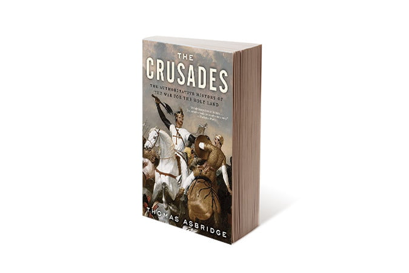

Categories
The Best Historical Books
The Crusades, Thomas Asbridge
I have read Thomas Asbridge’s magisterial work, The Crusades, three times, and after each reading I come away with more knowledge of and insight about the years spanning from the late 11th century to the late 13th. (Three times. Seriously.) The single-volume book is as equally impressive for the amount of doggedly researched information as it for its easy readability. Asbridge not only covers all of the major campaigns and battles of the Crusade era, painting vivid portraits of all the major players involved (Richard the Lionheart, Saladin, and the Sultan Baybars being notable examples), he also places the Crusades in context, both elucidating what led up to the many clashes and how their legacy changed the face of the world.
The Guns of August, Barbara Tuchman
The horrific cataclysm that was once known as The Great War, now World War I, left scars so deep they are hardly healed today. It shattered empires and nations, it ripped apart the land, and it left some 17 million people dead and tens of millions with life-changing injuries. And it’s ridiculous that the damn thing happened. To cover the entirety of the war, you are going to need to read several books, but to gain an appreciation for how and why the conflict started, you need to read Barbara Tuchman’s seminal work The Guns of August. The title refers to August 1914, the month in which active hostilities commenced.
The Liberation Trilogy, Rick Atkinson
Rick Atkinson didn’t write the book about World War II, he wrote the books. His three-volume series, An Army at Dawn: The War in North Africa, 1942-1943, he Day of the Battle: The War in Sicily and Italy, 1943-1944, and The Guns at Last Light:he War in Western Europe, 1944-1945, is about the best resource you could ask for when it comes to a comprehensive telling of America’s role in the entirety of the Western Theater of WWII. In reading the books, it’s shocking to learn at first how ill-prepared America was for war and amazing just how good we got at waging it in less than half a decade. Through the course of the books, you follow generals and GIs as, slowly but steadily, the tide turns from a harrowing defensive fight against Axis forces to a certain and total victory.